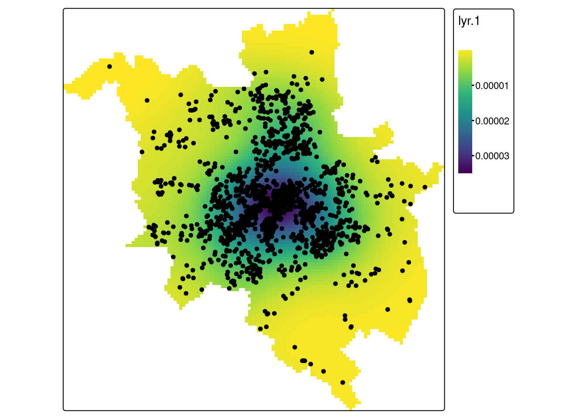

library(spatstat)
library(tmap)7 Metody oparte na analizie intensywności
W analizie intensywności rozkład przestrzenny punktów jest charakteryzowany względem określonego obszaru badań (np. granica miasta Poznań). Rozkład charakteryzowany jest za pomocą gęstości \(\lambda\) - liczby zdarzeń (\(n\)) na jednostkę powierzchni (\(a\)) obliczanej na podstawie danych.
intensywność zdarzenia (event) jest stała dla całego obszaru
- średnia intensywność obliczana jako liczba zdarzeń \(n\) na jednostkę powierzchni \(a\) (\(\lambda = \frac{n}{a}\))
intensywność zmienia się wraz z lokalizacją
- test zliczania w kwadratach (ang. quadrat count test)
- estymacja gęstości jądra (ang. kernel density estimation)
7.1 Metody oparte na analizie intensywności w R
Obliczenie gęstości wymaga przekształcenia obiektów na typ ppp (plannar point pattern) oraz zdefiniowanie obszaru analizy (tzw. okna, ang. window).
W tym celu zostaną wykorzystane dwie funkcje z pakietu spatstat:
as.ppp- konwertuje dane na obiekty klasy ppp. Wymaga podania obiektu oraz określenia obszaru analizy.as.owin- tworzy okno (window) na podstawie innego obiektu (np. granic miasta Poznania)
Pakiet spatstat dostarcza także funkcji:
quadratcount()- zliczanie punktów w kwadratachquadrat.test()- test zliczania w kwadratachdensity()- analiza gęstości jądra
Ponadto funkcja summary() zastosowana do obiektu klasy ppp dostarcza informacji o średniej intensywności, liczbie puntków oraz powierzchni analizowanego obszaru.
7.2 Przykład 1: Przestępczość w Poznaniu
W przykładzie 1 wykorzystano dane dotyczące przestępczości w Poznaniu (plik przestepstwa_2019.gpkg) wraz z granicą miasta Poznania (plik pzn_borders.gpkg). Do podsumowania rozkładu przestępczości wykorzystano statystyki centrograficzne. Plik przestepstwa_2019.gpkg zawiera tylko kolumnę geom bez dodatkowych atrybutów.
library(sf)Linking to GEOS 3.10.2, GDAL 3.4.1, PROJ 8.2.1; sf_use_s2() is TRUE# dane punktowe
p2019 = read_sf("data/przestepstwa_2019.gpkg")
#granica miasta Poznań
pzn = read_sf("data/pzn_borders.gpkg")7.2.1 Analiza intensywności
W analizie intensywności rozkład przestrzenny punktów jest charakteryzowany względem określonego obszaru badań (np. granica miasta Poznań). Rozkład charakteryzowany jest za pomocą gęstości - liczby zdarzeń (\(n\)) na jednostkę powierzchni (\(a\)) obliczanej na podstawie danych.
\[\hat{\lambda} = \frac{n}{a}\]
Obliczenie gęstości wymaga przekształcenia obiektów na typ ppp (plannar point pattern) oraz zdefiniowanie obszaru analizy (tzw. okna, ang. window). Funkcja as.ppp() z pakiety spatstat służy do przekonwertowania danych na obiekty klasy ppp. Wymaga podania obiektu oraz określenia obszaru analizy. Funkcja as.owin() z pakietu spatstat tworzy okno (window) na podstawie innego obiektu (np. granicy miasta Poznania).
library(spatstat)
#przekształcenie obiektu sf na obiekt owin definiujący okno (obszar analizy) dla obiektów ppp
pzn_owin = as.owin(pzn)
#przekształcenie daych punktowych na obiekt ppp.
p2019_ppp = as.ppp(st_geometry(p2019), W = pzn_owin)Obiekt p2019_ppp klasy ppp zawiera informację o liczbie punktów położonych w analizowanym obszarze oraz o współrzędnych oganiczających obszar analizy.
p2019_pppPlanar point pattern: 1661 points
window: polygonal boundary
enclosing rectangle: [345943.2, 368927.8] x [493660, 517878.9] unitsFunkcja summary() zastosowana dla obiektu klasy ppp dostarcza dodatkowych informacji, w tym o średniej intensywności (avarage intensity) - tj. liczbie punktów na jednostkę powierzchni oraz powierzchni analizowanego obszaru (window area) w jednostkach układu współrzędnych.
summary(p2019_ppp)Planar point pattern: 1661 points
Average intensity 6.347623e-06 points per square unit
Coordinates are given to 10 decimal places
Window: polygonal boundary
single connected closed polygon with 3139 vertices
enclosing rectangle: [345943.2, 368927.8] x [493660, 517878.9] units
(22980 x 24220 units)
Window area = 261673000 square units
Fraction of frame area: 0.47Dane dla miasta Poznania są w PUWG1992, w którym jednostki są podane w metrach. Obiekt klasy ppp można dowolnie przeszkalować. Poniżej obiekt zostanie przeskalowany z metrów na km.
p2019_ppp2 = rescale(p2019_ppp, 1000)summary(p2019_ppp2)Planar point pattern: 1661 points
Average intensity 6.347623 points per square unit
Coordinates are given to 13 decimal places
Window: polygonal boundary
single connected closed polygon with 3139 vertices
enclosing rectangle: [345.9432, 368.9278] x [493.66, 517.8789] units
(22.98 x 24.22 units)
Window area = 261.673 square units
Fraction of frame area: 0.47Aby uzyskać tylko informację o gęstości punktów można użyć polecenia:
summary(p2019_ppp2)$intensity[1] 6.347623Analiza intensywności zależna jest od przyjętego obszaru analizy. Poniżej jako obszar analizy przyjmiemy obwiednię obszaru miasta Poznania (bounding box).
pzn_owin_bb = as.owin(st_bbox(pzn))
p2019_ppp_bb = as.ppp(st_geometry(p2019), W = pzn_owin_bb)
p2019_ppp_bb2 = rescale(p2019_ppp_bb, 1000)
summary(p2019_ppp_bb2)Planar point pattern: 1661 points
Average intensity 2.983862 points per square unit
Coordinates are given to 13 decimal places
Window: rectangle = [345.9432, 368.9278] x [493.66, 517.8789] units
(22.98 x 24.22 units)
Window area = 556.661 square unitsPrzyjmując jako obszar analizy zasięg warstwy (bounding box) zamiast granicy miasta Poznania średnia intensywność zmienia się z 6,34 (granica Poznania) do 2,98. Poniższa wizualizacja pokazuje zakres granicy Poznania (niebieska linia), zasięgu warstwy (szary poligon) oraz położenia punktów.
library(tmap)
bb = st_as_sfc(st_bbox(pzn))
tm_shape(bb) +
tm_borders(fill = "grey") +
tm_shape(pzn) +
tm_borders(col = "blue") +
tm_shape(p2019) +
tm_dots()7.2.2 Zliczenie punktów w siatce
Intensywność punktów może nie być stała dla całego obszaru, a zmieniać się wraz z lokalizacją. Do zliczenia punktów w siatce można użyć funkcji quadratcount() z pakietu spatstat. Wynik można przedstawić numerycznie lub graficznie. Funkcja quadratcount() wymaga podania nazwy obiektu klasy ppp (p2019_pp) oraz liczby komórek w osi x oraz y (parametr nx oraz ny).
p2019_count = quadratcount(p2019_ppp, nx = 4, ny = 4)
plot(quadratcount(p2019_ppp, nx = 4, ny = 4), main = "Liczba przestępstw")p2019_counttile
Tile row 1, col 1 Tile row 1, col 2 Tile row 1, col 3 Tile row 2, col 1
2 14 61 8
Tile row 2, col 2 Tile row 2, col 3 Tile row 2, col 4 Tile row 3, col 1
200 636 26 11
Tile row 3, col 2 Tile row 3, col 3 Tile row 3, col 4 Tile row 4, col 2
230 408 48 0
Tile row 4, col 3 Tile row 4, col 4
15 2 Aby otrzymać bardziej zawansowaną wizualizację należy utworzyć siatkę jako obiekt przestrzenny pakietu sf
- Tworzenie siatki - pakiet sf
#utworzenie poligonu o zasiegu warstwy pzn z granicami miasta Poznania
pzn_bb = st_sf(geom = st_as_sfc(st_bbox(pzn)))
#utworzenie siatki, parametr n oznacza liczbę oczek siatki.
pzn_grid = st_make_grid(pzn_bb, n = 4)
#obiekt przestrzenny zawierający siatkę
pzn_grid_sf = st_sf(geometry = pzn_grid)plot(pzn_grid_sf)- Zliczenie liczby punktów w każdym oczku siatki
Liczba punktów w każdym oczku siatki zostanie obliczona poprzez przecięcie dwóch obiektów przestrzennych: pzn_grid zawierającego siatkę oraz warstwy punktowej p2019. W poniższym poleceniu funkcja st_intersects() przecina dwa obiekty oraz zwraca listę. Każdy element listy to jedno oczko siatki, wartości to numery punktów znajdujące się w danym oczku. Funkcja length() zwraca długość każdego elementu listy.
pzn_grid_sf$dane = lengths(st_intersects(pzn_grid, p2019))head(pzn_grid_sf$dane, 16) [1] 0 0 15 2 11 230 408 48 8 200 636 26 2 14 61 0library(tmap)
library(viridis)
tm_shape(pzn_grid_sf) +
tm_polygons(col = "dane", palette = "YlGn", n = 4, title = "Liczba punktów") +
tm_shape(p2019) +
tm_dots() +
tm_layout(legend.outside = TRUE)7.2.3 Test zliczania w kwadratach
Test zliczania w kwadratach służy do testowania hipotezy zerowej zakładającej, że dane są rozmieszczone losowo. Test ten dzieli obszar na równe kwadraty, a następnie zlicza liczbę punktów w każdym kwadracie oraz porównuje z wartościami oczekiwanymi (ta sama liczba punktów w każdym kwadracie). Test zliczenia w kwadratach można wykonać wykorzystując funkcję quadrat.test() z pakietu spatstat. Funkcja wymaga podania nazwy obiektu klasy ppp oraz liczby oczek siatki w osi x oraz y (nx, ny).
quadrat.test(p2019_ppp, nx = 4, ny = 4)Warning: Some expected counts are small; chi^2 approximation may be inaccurate
Chi-squared test of CSR using quadrat counts
data: p2019_ppp
X2 = 1538, df = 13, p-value < 2.2e-16
alternative hypothesis: two.sided
Quadrats: 14 tiles (irregular windows)Jak zinterpretujemy wynik testu?
qtest = quadrat.test(p2019_ppp, nx = 4, ny = 4)Warning: Some expected counts are small; chi^2 approximation may be inaccurateplot(qtest, nx = 4, ny = 4)7.2.4 Analiza gęstości jądra
Test zliczenia w kwadratach oblicza lokalną intensywność poprzez podzielenie obszaru na równej wielkości kwadraty. Analiza gęstości jądra (kernel density estimation) wykorzystuje ruchome okno do obliczenia lokalnej intensywności dla podzbiorów badanego obszaru. Ruchome okno definiuje się poprzez ustawienie parametrów jądra (kernel) - kształtu oraz rozmiaru (bandwith). W wyniku otrzymujemy siatkę rastrową, gdzie każde oczko siatki ma przypisaną wartość intensywności obliczoną dla obszaru o wielkości ruchomego okna wyśrodkowanego dla komórki do której przypisana jest wartość. Rozdzielczość wynikowej komórki będzie zawsze mniejsza niż rozmiar ruchomego okna. Jako jądro (kernel) często wykorzystuje się funkcję gaussowską.
W R analizę gęstości jądra można wykonać używając funkcji density(). W poniższym przykładzie parametr sigma oznacza rozmiar (bandwith). Sigma = 500 oznacza ruchome okno o wielkości 500m.
library(terra)
p2019_density1 = rast(density(p2019_ppp, sigma = 500))
crs(p2019_density1) = crs(pzn)
tm_shape(p2019_density1) +
tm_raster(palette = "-viridis", style = "cont") +
tm_shape(p2019) +
tm_dots() +
tm_layout(legend.outside = TRUE)p2019_density2 = rast(density(p2019_ppp, sigma = 1500))
crs(p2019_density2) = crs(pzn)
tm_shape(p2019_density2) +
tm_raster(palette = "-viridis", style = "cont") +
tm_shape(p2019) +
tm_dots() +
tm_layout(legend.outside = TRUE)
7.3 Przykład 2: Rozkład przestrzenny szkół w Poznaniu
W poniższym przykładzie przeanalizowano przestrzenny rozkład szkół podstawowych w Poznaniu wykorzystując metody oparte na intensywnści:
- Analizę średniej intensywności
- Test zliczania w kwadratach
- Analizę gęstości jąda
library(sf)
library(spatstat)
#wczytanie danych przestrzennych. Granica jest wykorzystywana wyłącznie do wizualizacji danych.
szkoly = read_sf("data/out_poznan_szkoly.gpkg", layer = "szkoly")
pzn = read_sf("data/out_poznan_szkoly.gpkg", layer = "granica")
#konwersja do obiektu klasy ppp
pzn_owin = as.owin(pzn)
szkoly_ppp = as.ppp(szkoly, w = pzn_owin)7.3.1 Analiza intensywności
summary(szkoly_ppp)Planar point pattern: 84 points
Average intensity 5.274679e-07 points per square unit
Coordinates are given to 10 decimal places
Window: rectangle = [351938.9, 365782.3] x [500644.3, 512148] units
(13840 x 11500 units)
Window area = 159251000 square units7.3.2 Zliczenie punktów w siatce
qc = quadratcount(szkoly_ppp, nx = 4, ny = 4)
plot(qc)
7.3.3 Test zliczania w kwadratach
quadrat.test(szkoly_ppp, nx = 4, ny = 4)
Chi-squared test of CSR using quadrat counts
data: szkoly_ppp
X2 = 64.571, df = 15, p-value = 8.123e-08
alternative hypothesis: two.sided
Quadrats: 4 by 4 grid of tilesJak zinterpetujesz wynik testu?
plot(quadrat.test(szkoly_ppp, nx = 4, ny = 4))
quadrat.test(szkoly_ppp, nx = 2, ny = 2)
Chi-squared test of CSR using quadrat counts
data: szkoly_ppp
X2 = 6.381, df = 3, p-value = 0.189
alternative hypothesis: two.sided
Quadrats: 2 by 2 grid of tilesJak zinterpetujesz wynik testu dla obszaru podzielonego na 2 kwadraty?
plot(quadrat.test(szkoly_ppp, nx = 2, ny = 2))
7.3.4 Analiza gęstości jądra
kde12<- density(szkoly_ppp, sigma = 1200)
kde12 <- rast(kde12)
tm_kde12 = tm_shape(kde12) +
tm_raster(palette = "-viridis", style = "cont", title = "Bandwidth = 1.2km")
kde05 <- density(szkoly_ppp, sigma = 500)
kde05 <- rast(kde05)
tm_kde05 = tm_shape(kde05) +
tm_raster(palette = "-viridis", style = "cont", title = "Bandwidth = 0.5km")
tmap_arrange(tm_kde12, tm_kde05)Zinterpretuj wyniki analizy z wykorzystaniem metod opartych o intensywności. Jaki jest rozkład szkół podstawowych w Poznaniu?